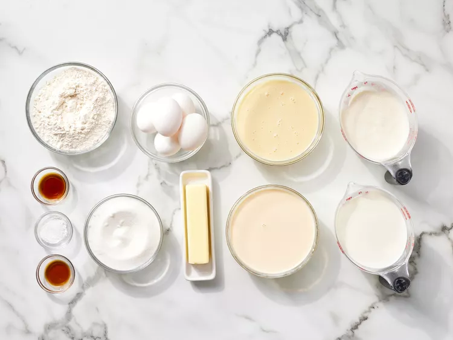
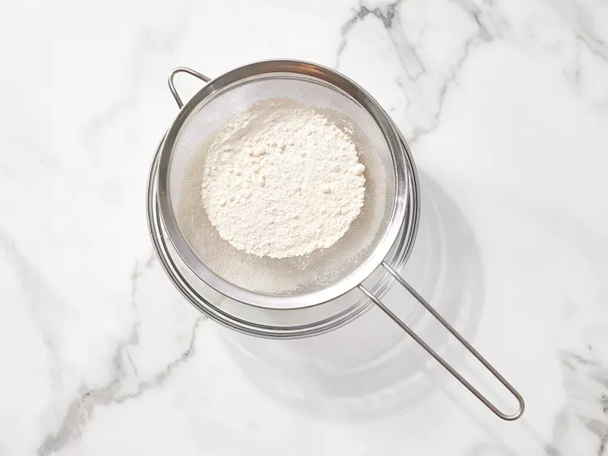
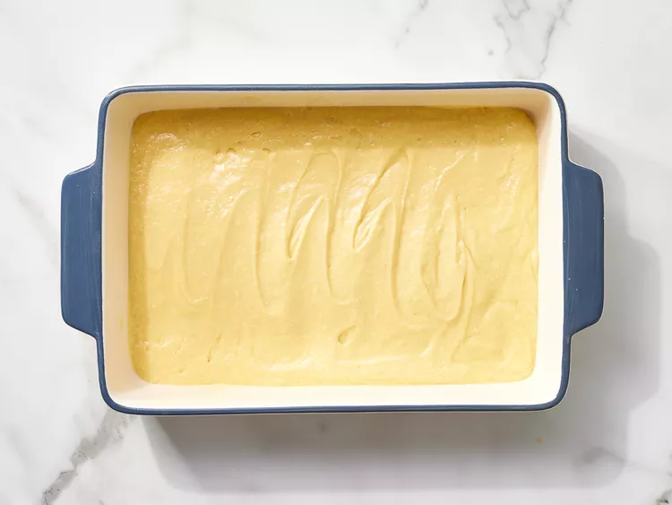
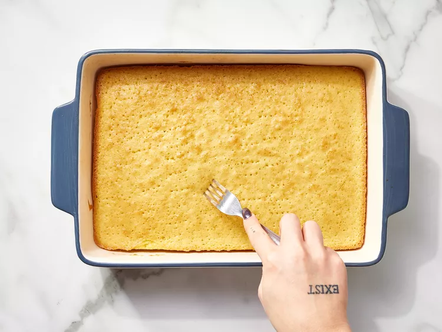
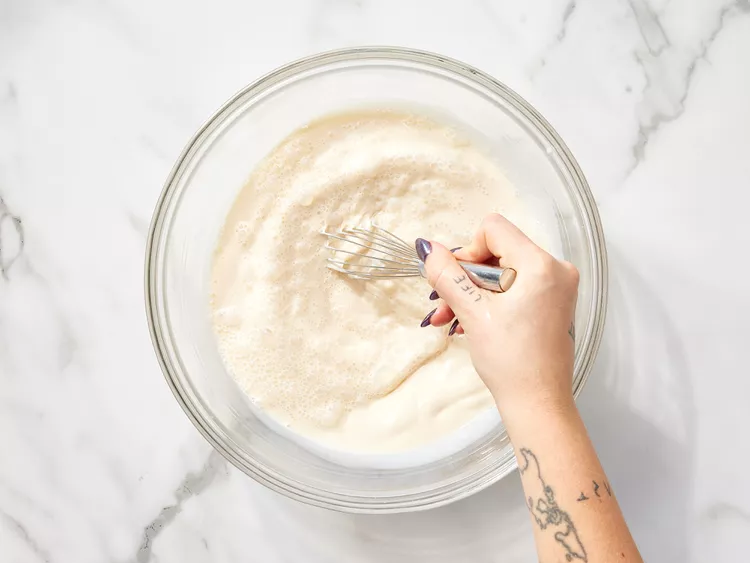
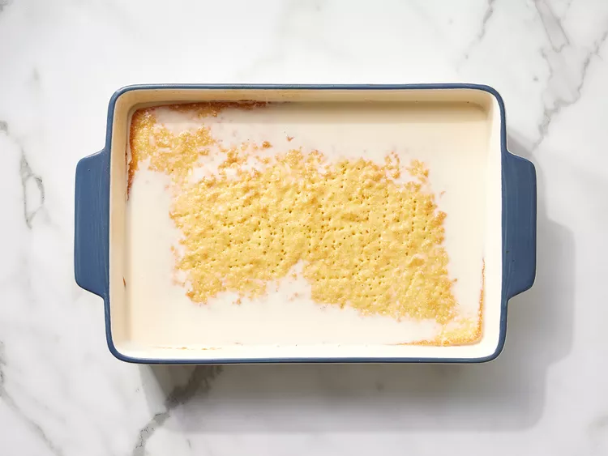
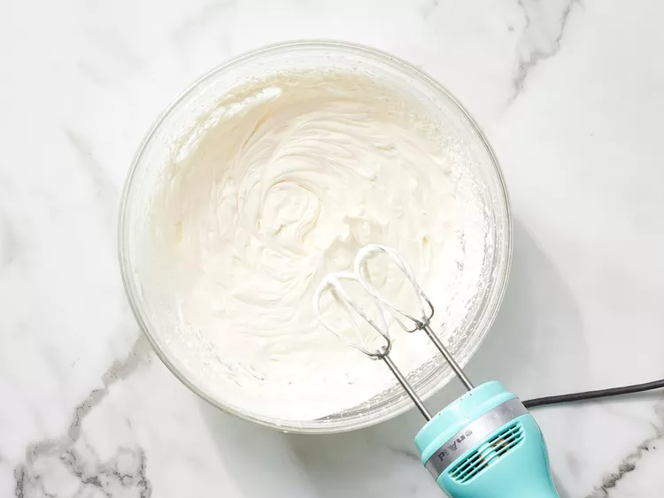
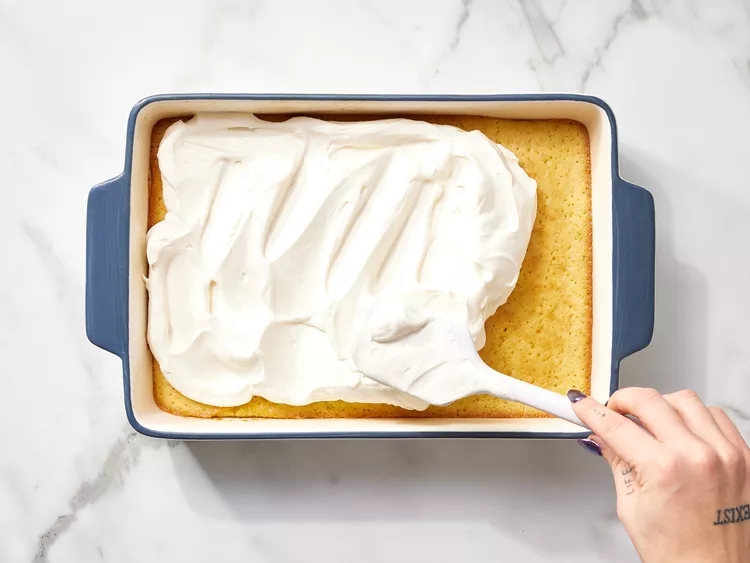
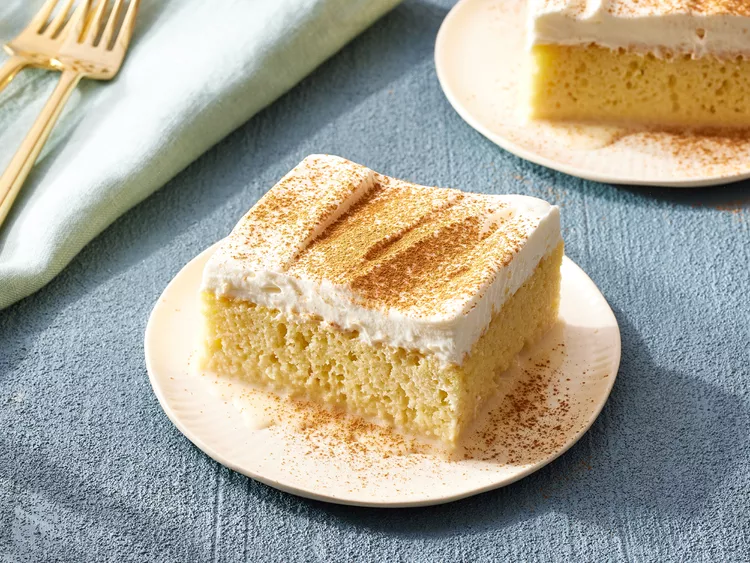

TRES LECHES


Description
This delicious tres leches cake features three types of milk: whole milk, condensed milk, and evaporated milk. It's topped with sweet whipped cream. An excellent cake for milk lovers!
Ingredients for Twenty-Four (!!) Servings
- 1 ½ cups all-purpose flour
- 1 teaspoon baking powder
- ½ cup unsalted butter
- 1 cup white sugar
- 5 eggs
- ½ teaspoon vanilla extract
- 2 cups whole milk
- 1 (14 ounce) can sweetened condensed milk
- 1 (12 fluid ounce) can evaporated milk
- 1 ½ cups heavy whipping cream
- 1 cup white sugar
- 1 teaspoon vanilla extract
Steps
- Gather the ingredients.

- Preheat the oven to 350 degrees F (175 degrees C). Grease and flour a 9x13-inch baking pan.
- Sift flour and baking powder together; set aside.

- Beat sugar and butter together in a large bowl with an electric mixer until light and fluffy. Add eggs and vanilla; beat well. Add flour mixture, about 1/2 cup at a time, mixing until well blended.

- Pour batter into the prepared pan.

- Bake in the preheated oven until a toothpick inserted into the center comes out clean, about 30 minutes. Pierce cake all over with a fork; let cool to room temperature.

- Mix whole milk, condensed milk, and evaporated milk together in a bowl.

- Pour the whole milk, condensed milk, and evaporated milk mixture over the top of the cooled cake and allow to soak in.

- Whip cream, remaining 1 cup of sugar, and 1 teaspoon vanilla in a chilled glass or metal bowl with an electric mixer until thick.

- Spread over the top of the filling.

- Keep cake refrigerated until serving. Enjoy!

ODIN RECIPES